Data Preparation and Exploratory Analysis
Four separate collections of federal vehicle-safety data were gathered, repaired, and joined into a single analysable table. This section documents where every value came from, what was wrong with it, and what it looks like once corrected.
Where the data came from, and why
The question driving this project needs two kinds of evidence that are not normally stored together: what a laboratory says about a vehicle before it is sold, and what its owners report after. Both are published by the U.S. National Highway Traffic Safety Administration, the federal body responsible for vehicle safety standards, and both are in the public domain. Data were gathered by two independent routes so that the project does not depend on a single mechanism.
Route 1 — Application Programming Interfaces
An API (Application Programming Interface) is a published address that
returns structured data to a program rather than a page to a browser. Three
keyless NHTSA endpoints were queried in Python with the requests
library, sweeping 39 vehicle models across model years 2016 to 2024.
| Source | Endpoint | What it provides |
|---|---|---|
| Complaints | api.nhtsa.gov/complaints/complaintsByVehicle |
Owner-filed defect reports: component, crash and fire flags, injuries, deaths, dates, narrative |
| Recalls | api.nhtsa.gov/recalls/recallsByVehicle |
Recall campaigns: affected component, consequence, remedy, park-outside warnings |
| Safety Ratings | api.nhtsa.gov/SafetyRatings/... |
Crash-test star ratings, rollover probability, driver-assistance equipment |
A single core request looks like this, and returns JSON:
GET https://api.nhtsa.gov/complaints/complaintsByVehicle?make=honda&model=accord&modelYear=2020
Every response is cached to disk before parsing, so the gathering step is resumable and reproducible without repeatedly loading the public service.
Route 2 — Bulk file download
The APIs expose current records only. To gain historical depth, the Office of Defects Investigation flat file was downloaded directly and parsed from its tab-delimited layout:
https://static.nhtsa.gov/odi/ffdd/inv/FLAT_INV.zip
All code and all data are linked.
- Gathering: fetch_data.py · Cleaning: clean_data.py · Visualisation: eda_visualize.py
- Raw data: data/raw/ — complaints, recalls, safety ratings, investigations
- Cleaned data: data/clean/ — complaints, joined model-year table
- Full cleaning log: cleaning_report.txt
What was gathered
| Table | Source | Raw rows | Clean rows | Columns |
|---|---|---|---|---|
| Complaints | API | 84,135 | 83,967 | 21 |
| Recalls | API | 1,662 | 1,662 | 15 |
| Safety ratings | API | 505 | 421 | 27 |
| Investigations | Bulk download | 154,380 | 138,271 | 10 |
| Joined model-year table | Derived | — | 229 | 30 |
What the data looked like before and after
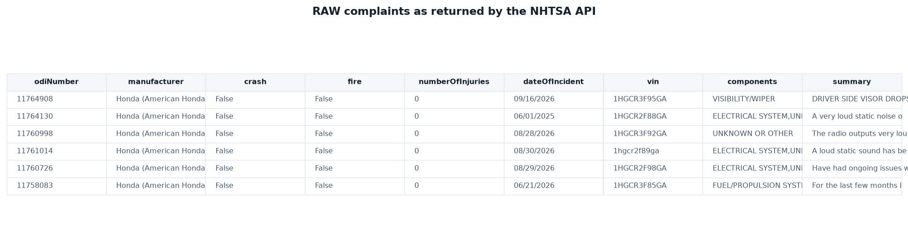
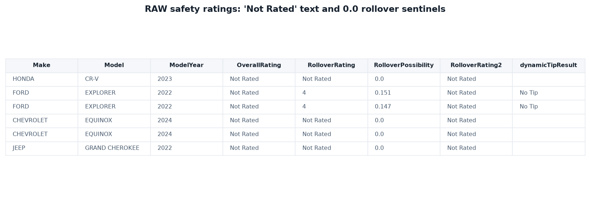
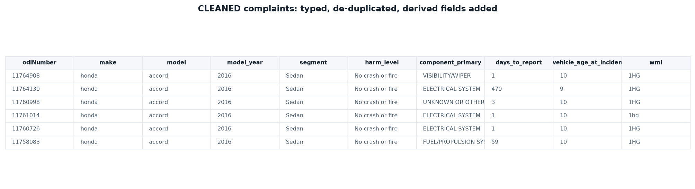
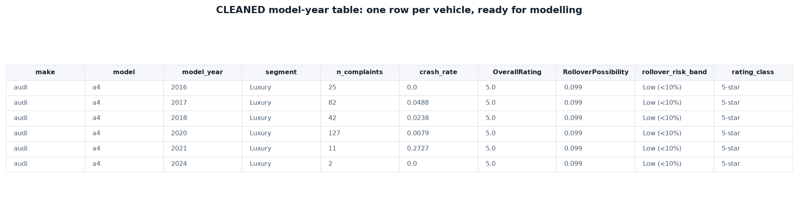
Cleaning: what was wrong and what was done
The cleaning and the exploration were carried out together rather than in sequence, because most of the defects below were only visible once the data were plotted. Every step is logged with before-and-after row counts in the cleaning report.
| Problem found | Evidence | Action taken |
|---|---|---|
| Missing values stored as text | "Not Rated" in every star-rating column; a blank space in
the tip-test column |
Converted to true missing values, then handled explicitly |
| Sentinel disguised as a measurement | Rollover probability of exactly 0.0 on 46 vehicles —
matching the unrated set exactly |
Recoded to missing; genuine values range from 6.6% to 20.8% |
| Columns with no information | RolloverRating2 and RolloverPossibility2 hold one
constant value in every row |
Dropped |
| Impossible dates | Incident dates as early as 1917 on vehicles built after 2015; two complaints filed before the incident occurred | 166 records removed as logically impossible |
| Two different date formats | Complaints use month/day/year; recalls use day/month/year | Parsed separately with explicit formats rather than guessed |
| Multi-label category field | 1,408 distinct comma-joined component combinations | Reduced to the primary system, giving 41 usable categories |
| Sentinel model year | Bulk file uses 9999 for unknown |
16,108 such records removed |
| Personal data | Partial vehicle identification numbers present, 1,721 malformed | Truncated to the three-character manufacturer prefix |
| Join would duplicate outcomes | Ratings are issued per body style, so a naive join copied one set of complaint counts onto several rows | Ratings averaged to model-year level before joining |
Variables added
- Discretisation: a five-level
harm_leveloutcome (no crash or fire → fire → crash → injury → fatal), and a four-band rollover risk category. - Derived measures: reporting delay in days, vehicle age at incident, crash rate, fire rate, injuries per hundred complaints, and recall counts per model-year.
- Binary indicators: whether forward-collision warning and lane-departure warning were standard equipment on every rated body style.
Result: 99.8% of complaint records survived cleaning, and the final tables contain no missing values in any analysed column. Where records were removed, they were removed for a stated, checkable reason.
Exploring the data
Sixteen figures below examine the record from both directions: what owners report, and what the laboratory measured.
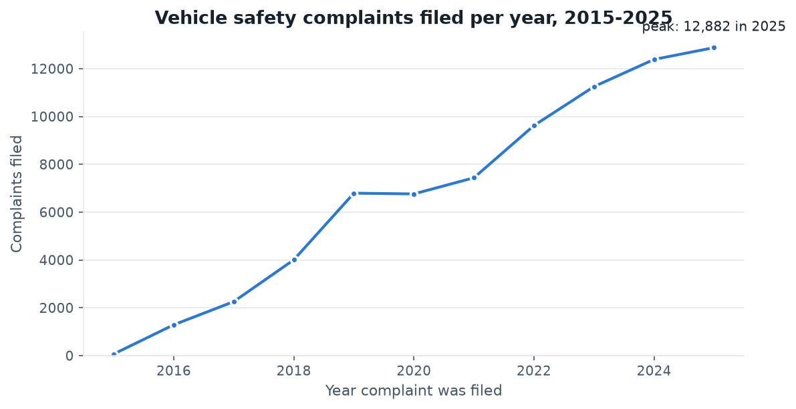
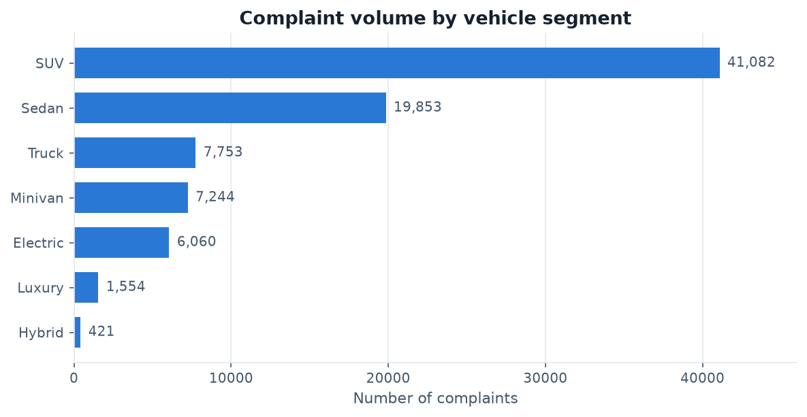
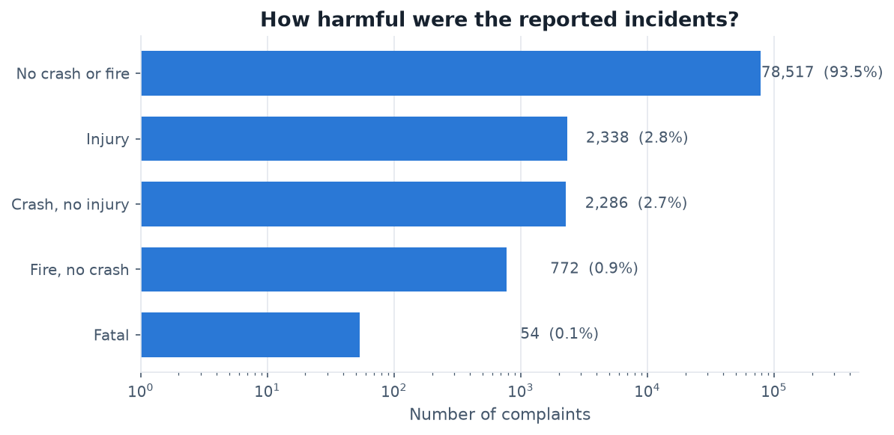
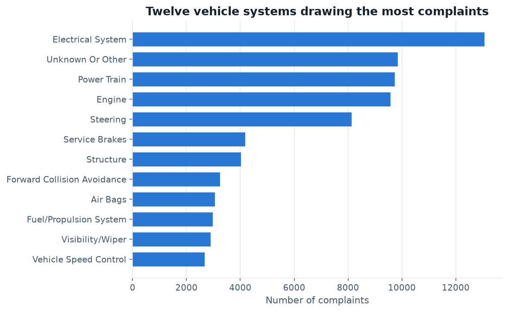
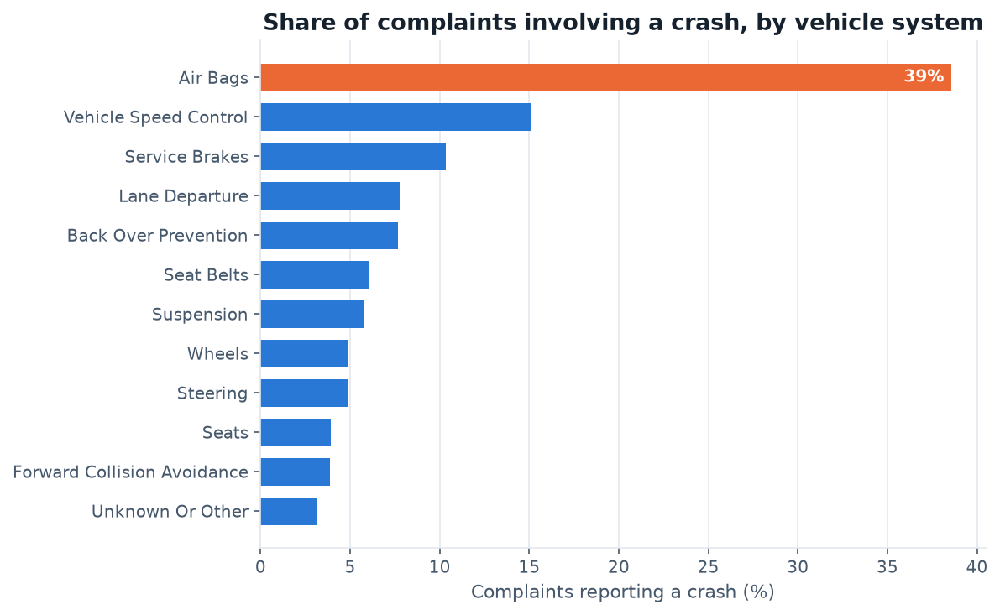
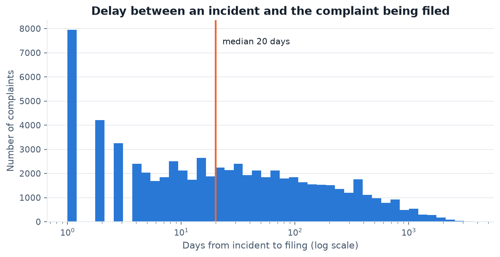
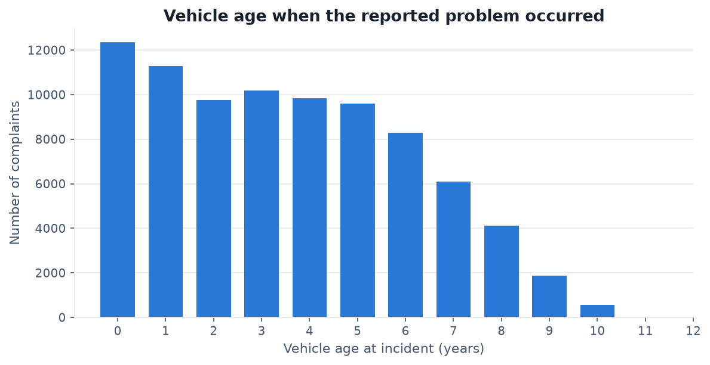
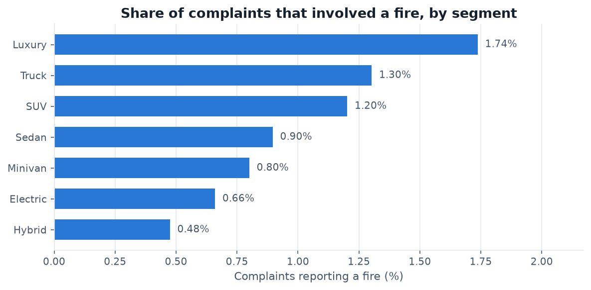
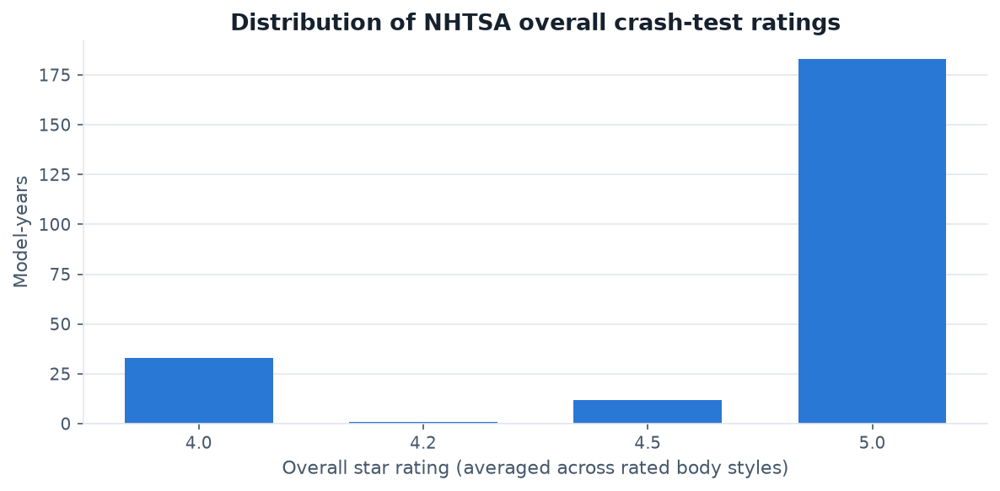
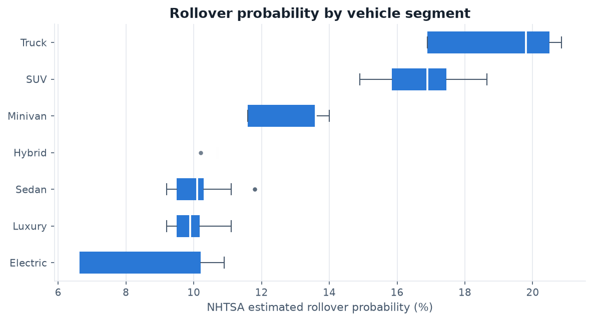
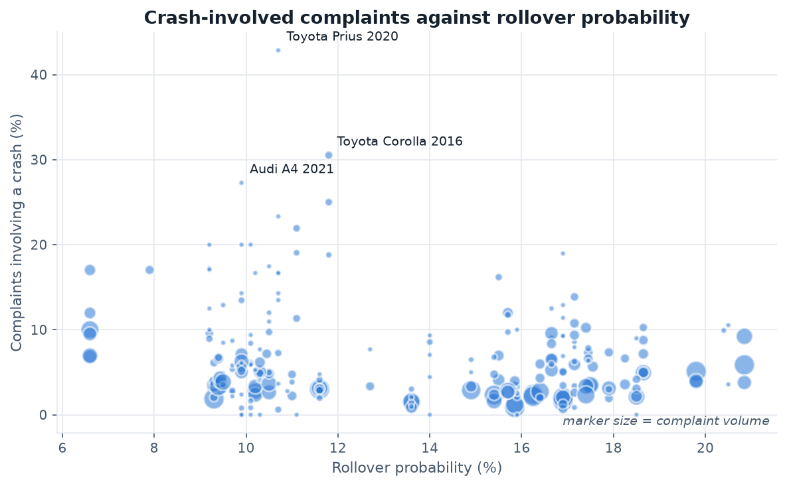
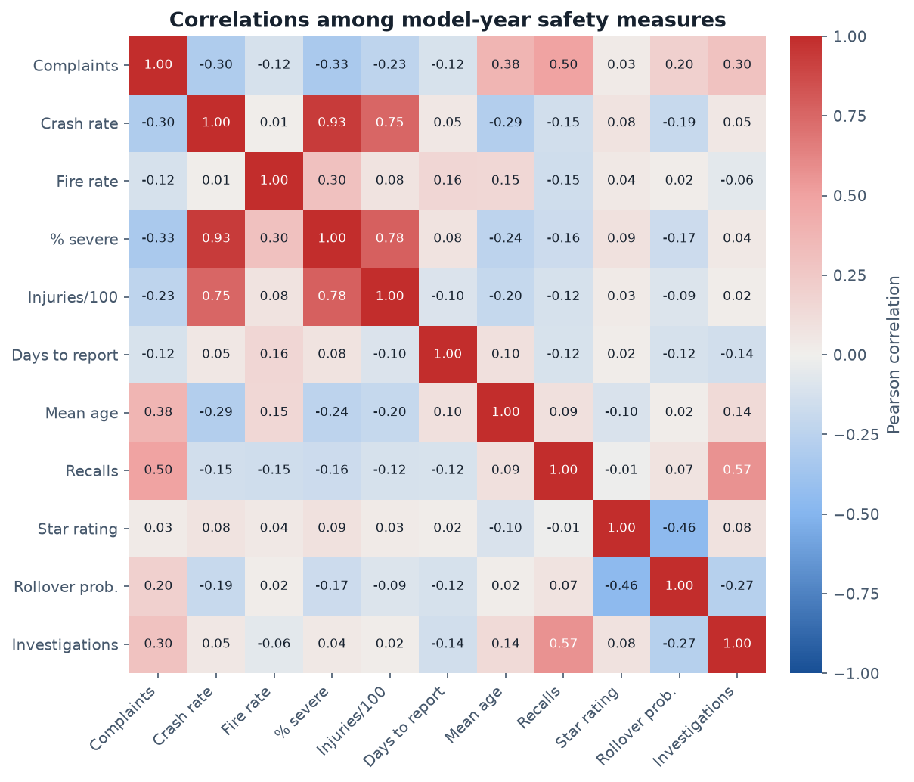
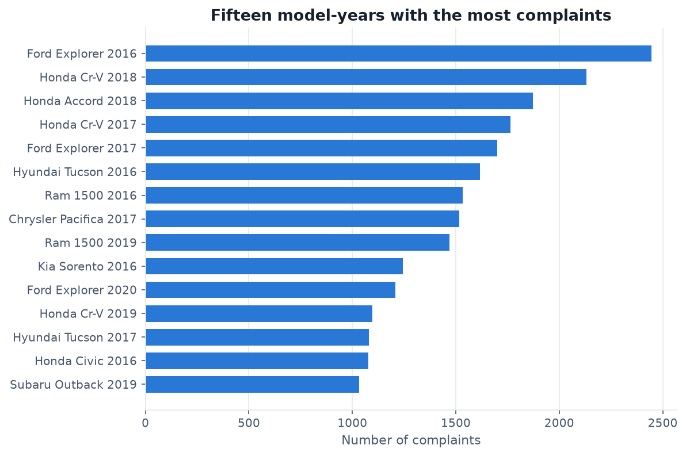
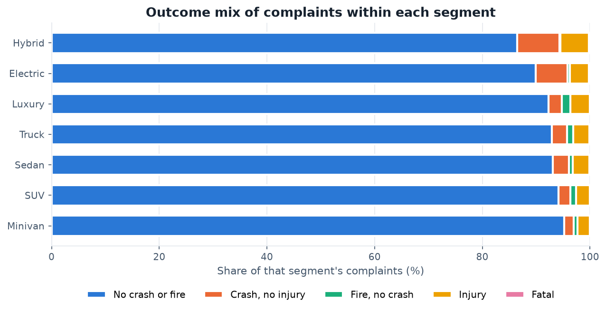
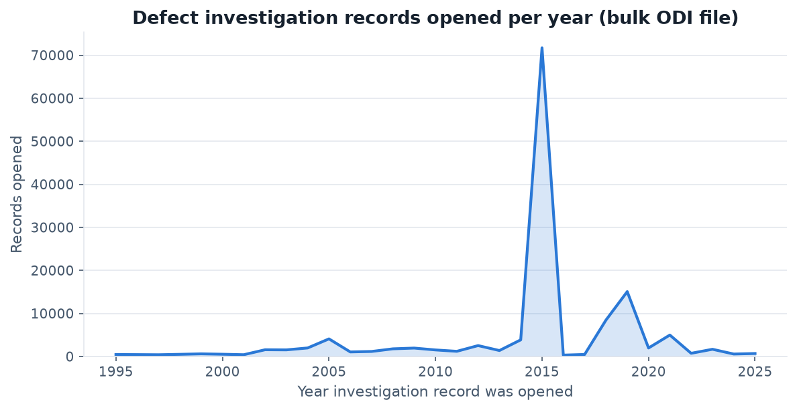
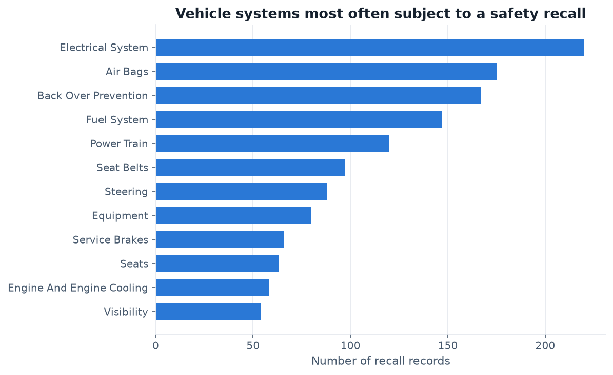
What the exploration suggests
Three patterns stand out before any modelling has been done. First, crash-test ratings barely move: 85% of the rated model-years in this collection carry an average of four and a half stars or better, so the measure that buyers rely on separates modern vehicles only weakly. Second, star ratings show almost no relationship with any ownership-record measure, while rollover probability is moderately and negatively related to the overall score — the laboratory number appears to describe a different dimension of safety from the one the complaint record captures. Third, the segments that look safest on volume look different once exposure is removed: hybrid and electric complaints are the most likely to involve a crash, yet the least likely to involve a fire, which inverts a common assumption.
These are associations in observational data, not causal findings, and the complaint record is self-selected: it reflects who chose to report, not everything that went wrong. The modelling modules that follow will test whether these patterns survive more careful treatment.